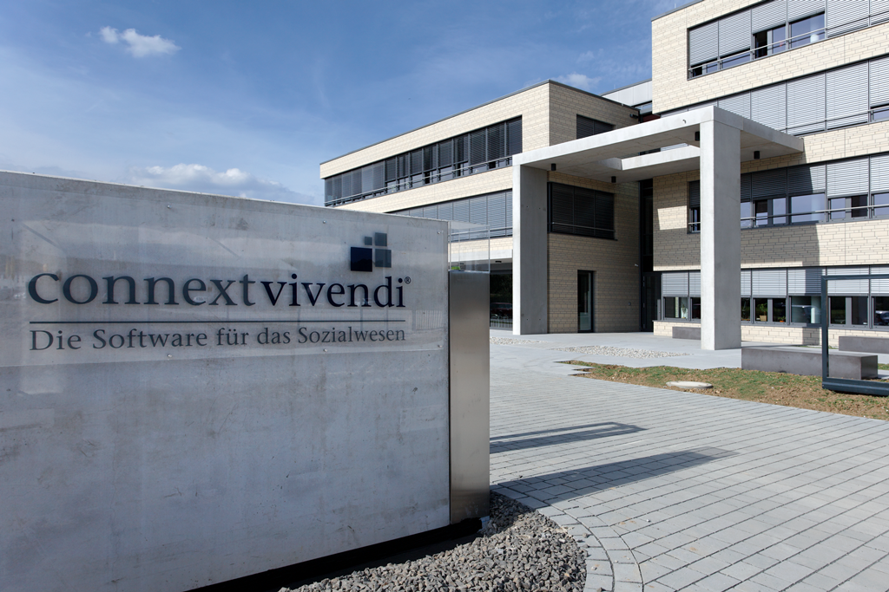

Connext wurde im April 1986 als "Kesselmeier Mikrocomputer" in Paderborn gegründet und befasste sich zunächst - neben klassischen Systemhausdienstleistungen - mit der Entwicklung und Implementierung von Individualsoftware.
Im Jahr 1991 erfolgte die Umfirmierung zur Connext Communication GmbH und wenig später die Konzentration auf das Sozial- und Gesundheitswesen. Mit der Einführung der ersten Vivendi-Module Anfang 1996 und der raschen Verbreitung im Markt gelang der erfolgreiche Wandel zum Standardsoftware-Hersteller.
In den folgenden Jahren entstanden Geschäftsstellen in Berlin, München, Hamburg sowie in Bad Vilbel und Bietigheim-Bissingen. Der österreichische Markt wird seit 2004 durch den Vertriebspartner x-tention bedient.
2010 erfolgte in Paderborn der Umzug der Unternehmenszentrale auf den neuen Connext Campus, der u.a. auch ein Schulungs- und Trainingszentrum umfasst.
Stolz sind wir darauf, dass es in der - für ein IT-Unternehmen - recht langen Firmengeschichte stets gelungen ist, auf Basis sehr solider Strukturen laufend für echte Produktinnovationen zu sorgen. Herausragenden Anteil hieran haben unsere großartigen Anwender, mit denen uns vielfach eine 20 Jahre und länger dauernde Zusammenarbeit verbindet.
Wir streben nach ständigen Verbesserungen in der Qualität, dem Nutzen und dem Wert der Dienstleistungen und Produkte, die wir unseren Kunden anbieten. Unsere Lösungen werden praxisnah in enger Kooperation mit Verbänden, Trägern und Einrichtungen entwickelt.
Wir konzentrieren uns auf die Bereiche, auf die wir uns verstehen und in denen wir einen echten Beitrag leisten können. Fortlaufende Innovationen sichern unseren Vorsprung in diesen Bereichen.
Die langjährige vertrauensvolle und partnerschaftliche Zusammenarbeit mit den Anwendern ist die Basis für ein beständiges und gesundes Wachstum von Connext.
Connext gibt seinen Mitarbeitern Gelegenheit, an dem von ihnen erarbeiteten Unternehmenserfolg teilzuhaben. Hierzu gehören u.a. eine leistungsbezogene Vergütung, garantierte Arbeitsplatzsicherheit und die Chance zu persönlicher Zufriedenheit, die aus dem Stolz auf das Erreichte erwächst. Das organisatorische Umfeld fördert individuelle Motivation, Initiative und Kreativität. Zudem bietet es großen Spielraum zum Erreichen der festgelegten Ziele.
Wir erkennen die Verpflichtung unseres Unternehmens gegenüber der Gesellschaft und werden ihr durch soziales Handeln gerecht. Connext engagiert sich seit vielen Jahren in sozialen Projekten, vornehmlich im Bereich der Kinder- und Jugendhilfe. Mit der im Dezember 2007 vollzogenen Errichtung der Stiftung Vivendi wurde dieses Engagement dauerhaft gefestigt.
Falls du mehr Informationen über eine Ausbildung oder ein Studium bei Connext erhalten möchtest, kannst du mehr Informationen auf unserer Website erhalten.